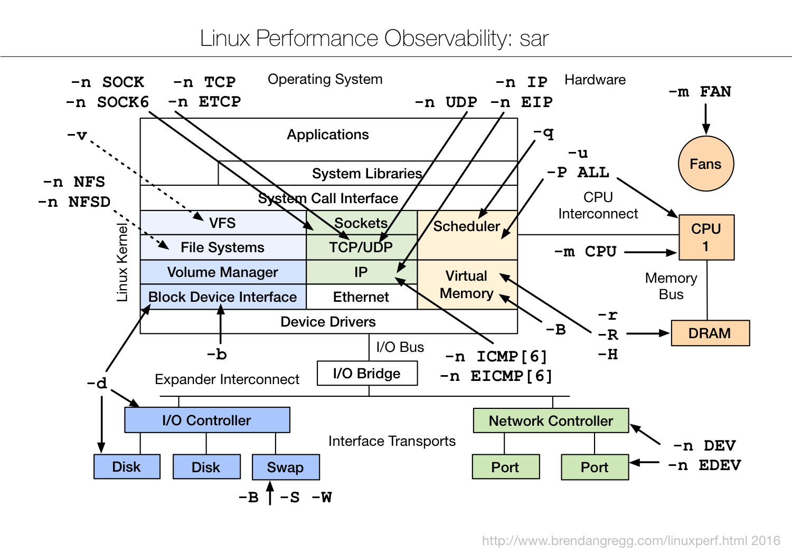

TL;DR — Most tools show you now. sar (System Activity Reporter) shows you then — it continuously records system counters to disk so when you're paged at 9am about a 3am slowdown, the data already exists. One tool covers every subsystem via flags: CPU (-u, -P ALL), memory (-r, -B, -W), disk (-d, -b), network (-n DEV, -n TCP,ETCP, and friends), run queue (-q), and more. This chapter walks the whole flag map from Gregg's sar diagram, how collection works, and how to replay history with -f.
Why sar is special
Every other tool in this series has the same blind spot: it shows the system at the moment you run it. But performance incidents are usually reported after the fact — "the site was slow around 3am," "checkout latency spiked during the batch job last night." By the time you log in, the event is gone and top shows a calm system. You can't troubleshoot what you can't see.
sar solves this by recording. A background collector samples kernel counters every few minutes (default 10) and writes them to daily binary files. sar then replays any time window from those files. It's the system's flight recorder — low-overhead, always-on, and built into the sysstat package that's been on Linux for decades. When the page comes in, you ask sar "what did CPU/disk/network look like at 3am?" and get the answer.
The second thing that makes sar special: one tool, every subsystem. Instead of remembering iostat for disk, mpstat for CPU, vmstat for memory, and a pile of network commands, sar covers them all through flags — and crucially in the same consistent, parseable format, live or historical.

The original — Brendan Gregg's "Linux Performance Observability: sar" (brendangregg.com, 2016). The simplified diagram below walks it box by box.
Fig 1 — One tool, every layer, by flag. sar's options map onto the same system stack as the rest of the series.
How collection works
sar has two halves: a collector that records, and the sar command that reads. The collector is sadc (system activity data collector), driven on a schedule by cron/systemd helpers:
sa1— a wrapper run frequently (e.g. every 10 min by cron/timer) that callssadcto append a sample to today's data file.sa2— run once daily to produce a text summary report.- Data files — live in
/var/log/sysstat/(or/var/log/sa/), namedsaDDby day of month (e.g.sa03for the 3rd). They rotate monthly by default.
# install + enable collection
sudo apt install sysstat # or: dnf install sysstat
sudo systemctl enable --now sysstat
# confirm it's collecting (edit ENABLED="true" if needed):
cat /etc/default/sysstat
# tighten the sample interval (default 10 min) in the timer/cron:
# /etc/cron.d/sysstat -> */2 for every 2 minutessa1 interval to 1–2 minutes. Trade-off: slightly bigger data files. Worth it on anything latency-sensitive.Live vs historical
Two modes, same flags:
# LIVE: sample every 1s, 5 times (like vmstat/iostat)
sar -u 1 5
# HISTORICAL: replay today's recorded data
sar -u
# replay a specific day's file:
sar -u -f /var/log/sysstat/sa03
# replay a time window from history:
sar -u -f /var/log/sysstat/sa03 -s 02:55:00 -e 03:30:00That last command is the whole point: "show me per-CPU usage between 2:55 and 3:30 this morning." Swap -u for any subsystem flag to zoom that window across CPU, disk, network — all from data that was already on disk before you knew there was a problem.
CPU & scheduler flags
| Flag | Shows |
|---|---|
-u | overall CPU: %user %system %iowait %steal %idle |
-P ALL | per-CPU breakdown — spot a single hot core / imbalance |
-q | run-queue length, load averages, blocked tasks — CPU saturation |
-w | context-switch & task-creation rate |
-m CPU | CPU power management — frequency, where available |
sar -u 1 5 # overall CPU live
sar -P ALL 1 5 # per-CPU live
sar -q 1 5 # run-queue + load + blockedThe columns to read like the live tools: high %iowait means blocked on disk, high %steal on a VM means the hypervisor took your cycles (noisy neighbour), and -q's runq-sz + blocked reveal saturation that %idle alone hides. Recorded historically, these answer "was the 3am slowdown CPU-bound, I/O-bound, or steal?" — the first fork in any triage.
Memory & paging flags
| Flag | Shows |
|---|---|
-r | memory utilization — free, used, cache, commit |
-R | memory allocation rate (pages/s) |
-B | paging stats — page-in/out, major faults, scan rate |
-W | swapping — pages swapped in/out per second |
-H | hugepage utilization |
-S | swap space utilization |
sar -r 1 5 # memory used/free/cache/commit
sar -B 1 5 # paging: pgpgin/s, majflt/s
sar -W 1 5 # swap in/out — should be ~0The killer signal here is -W / -B showing swap or major faults during the incident window. A database that starts swapping hot memory at 3am — perhaps because a batch job grabbed RAM — will show clean CPU but climbing pswpout/s, and sar -W -f ... proves it after the fact. -B's majflt/s (major faults = had to hit disk) is the page-cache-pressure tell.
Disk & block flags
| Flag | Shows |
|---|---|
-d | per-device I/O: tps, throughput, await, %util, queue size |
-b | overall block I/O rate — transfers and bytes/s, read vs write |
-v | kernel FS tables — inode, file handle, dentry usage |
sar -d -p 1 5 # per-device (-p = pretty device names)
sar -b 1 5 # overall block I/O rate
sar -v 1 5 # inode/file-handle usagesar -d is your historical iostat -x. The columns that matter: %util (device busy), await (I/O latency ms), and aqu-sz/avgqu-sz (queue depth = saturation). Replaying sar -d -f ... over the incident window tells you whether the disk was the bottleneck — high await + high %util at 3am = storage. -v catches the rarer "ran out of file handles/inodes" failure.
Network flags
Network is where sar's flag richness shows — a sub-flag per protocol layer, matching the diagram's left-column labels.
| Flag | Shows |
|---|---|
-n DEV | per-interface throughput — packets/s, bytes/s, the bandwidth view |
-n EDEV | per-interface errors & drops — the failure view |
-n TCP | TCP connection rates — active/passive opens |
-n ETCP | TCP errors — retransmits, resets, failed connections |
-n UDP | UDP datagram rates + errors |
-n IP / -n EIP | IP-layer datagram stats / errors |
-n ICMP / -n EICMP | ICMP message rates / errors (also [6] for IPv6) |
-n SOCK / -n SOCK6 | socket counts in use (TCP/UDP/raw), v4 & v6 |
-n NFS / -n NFSD | NFS client / server call rates |
sar -n DEV 1 5 # per-NIC throughput
sar -n EDEV 1 5 # per-NIC errors/drops
sar -n TCP,ETCP 1 5 # TCP opens + retransmits/resets
sar -n SOCK 1 5 # sockets in use
# replay last night's network errors:
sar -n EDEV,ETCP -f /var/log/sysstat/sa03 -s 02:55:00 -e 03:30:00The pairing -n TCP,ETCP is the network triage staple: TCP shows connection rate (a spike = a connection storm), ETCP's retrans/s shows packet loss on live traffic — the historical counterpart to Part 1's tcpretrans. And -n EDEV's rxdrop/s/txdrop/s catch NIC-level drops (undersized ring buffers, Part 4) that explain mystery latency. Recorded, these answer "was the network dropping packets during the slowdown?"
Hardware: power & fans
Top-right of the diagram: -m sub-flags read hardware sensors where the platform exposes them.
| Flag | Shows |
|---|---|
-m CPU | per-CPU frequency (MHz) — is the chip throttling/not boosting? |
-m FAN | fan speeds (RPM) |
-m TEMP | temperatures — thermal context for throttling |
-m IN / -m USB | voltage inputs / USB device power |
sar -m CPU recorded over an incident can reveal thermal throttling — cores dropping frequency exactly when latency rose — which ties to Part 4's governor and the EPYC guide's power section. Sensor availability depends on the platform (often limited on cloud VMs).
Practical recipes
The everyday sar moves:
# EVERYTHING for today (all subsystems), great first replay
sar -A | less
# the "what happened at 3am" sweep across subsystems:
for f in -u "-P ALL" -r -B -W -d "-n DEV" "-n EDEV" "-n TCP,ETCP" -q; do
echo "===== sar $f ====="; sar $f -f /var/log/sysstat/sa03 -s 02:55:00 -e 03:30:00
done
# live multi-subsystem (CPU + disk + net) for 30s:
sar -u -d -n DEV 1 30
# machine-readable for graphing (JSON/CSV):
sar -u -f /var/log/sysstat/sa03 -o --iface=eth0 # see sadf for export
sadf -d /var/log/sysstat/sa03 -- -u | head # CSV via sadfsadf is the export companion — it turns sar data into CSV/JSON/XML for dashboards and graphing tools, so you can feed historical counters into Grafana or a one-off plot. That makes sar not just a CLI but a lightweight always-on metrics source with zero extra agents.
sar vs the live tools vs a TSDB
Where sar sits:
- vs live tools (
top/iostat/vmstat):saris the only one that remembers. Use live tools for now,sarfor then and for the same data in one consistent format. - vs a full TSDB (Prometheus/Grafana): a metrics stack is richer, queryable, and fleet-wide — but it's infrastructure you build and maintain.
saris one package, on every box, recording by default, with no server. It's the floor of historical observability; a TSDB is the ceiling. On any box,saris already there when you need it.
Hands-on: troubleshoot last night's incident
sar's whole value is replay. Here's the full flow — enable collection, then reconstruct a 3am slowdown at 9am from data that was already on disk.
Step 1 — turn on collection (do this today, before you need it)
sudo apt install -y sysstat # or: dnf install sysstat
sudo sed -i 's/ENABLED="false"/ENABLED="true"/' /etc/default/sysstat
sudo systemctl enable --now sysstat
# tighten sampling to 2 min on a latency-sensitive box:
sudo sed -i 's#5-55/10#*/2#' /etc/cron.d/sysstat 2>/dev/null
ls /var/log/sysstat/ # saDD files appear, one per dayStep 2 — the incident: replay the window across subsystems
# "checkout was slow around 03:00 last night" — replay 02:55-03:30
DAY=/var/log/sysstat/sa$(date -d yesterday +%d)
sar -u -f $DAY -s 02:55:00 -e 03:30:00 # CPU
sar -d -p -f $DAY -s 02:55:00 -e 03:30:00 # disks
sar -W -f $DAY -s 02:55:00 -e 03:30:00 # swapping
sar -n EDEV,ETCP -f $DAY -s 02:55:00 -e 03:30:00 # net errors/retransmitsStep 3 — read the smoking gun
# sar -d output for the window:
03:00:01 DEV tps await aqu-sz %util
03:02:01 nvme0n1 812.0 42.6 18.9 99.4 <- disk pegged, 42 ms waits
03:04:01 nvme0n1 790.0 45.1 19.4 99.1
# sar -W same window:
03:02:01 pswpin/s pswpout/s
03:02:01 0.00 640.20 <- it was swapping tooRead it: at 03:02 the disk hit 99% util with 42 ms await and the box was swapping (640 pages/s out) — a batch job grabbed RAM, forced swapping, and saturated the disk. That's the whole story, reconstructed hours later. Do this: cap the batch job's memory/IO (cgroup), lower vm.swappiness (Part 4), and schedule it off-peak.
The everyday moves
sar -u 1 5 # live CPU, like mpstat
sar -r 1 5 # live memory
sar -n DEV 1 5 # live per-NIC throughput
sar -A | less # EVERYTHING recorded today — first replay
# export for a graph:
sadf -d $DAY -- -u | head # CSV of CPU, pipe to your plotterRead it: sar -n TCP,ETCP over an incident answers "was the network dropping packets?"; sar -q answers "was the run queue backed up?" — each flag a different layer, all from the same recorded file.
Takeaways
- sar remembers. Its superpower is historical replay — troubleshoot last night's incident from data recorded before you knew it happened.
- One tool, every layer, by flag: CPU (
-u/-P ALL/-q), memory (-r/-B/-W), disk (-d/-b), network (-n DEV/EDEV/TCP/ETCP/...), hardware (-m). - Enable it everywhere. Install
sysstat, enable collection, tighten the interval to 1–2 min on latency-sensitive hosts. - Replay a window:
sar -<flag> -f /var/log/sysstat/saDD -s START -e ENDis the incident-forensics command. - Export with
sadffor graphing;saris the zero-setup floor beneath a full metrics stack.
References
- Brendan Gregg — Linux Performance — source of the sar diagram.
- sysstat (sar, sadc, sadf) — the project + man pages.
- sar(1) man page — every flag in detail.
Extra reads
- Part 1 — Observability Tools — the live tools sar records historically.
- Part 4 — Tuning Tools — act on what sar's history reveals.
- eBPF for Database Troubleshooting — per-event depth when sar's counters aren't enough.
Built from Brendan Gregg's "Linux Performance Observability: sar" diagram (linuxperf.html, 2016). Flag availability and column names vary slightly by sysstat version; sensor flags (-m) depend on hardware exposure and are often limited on cloud VMs. Confirm collection is enabled — many distros ship sysstat installed but not collecting.